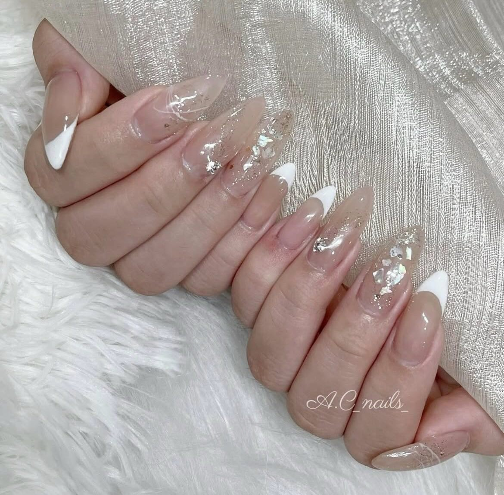
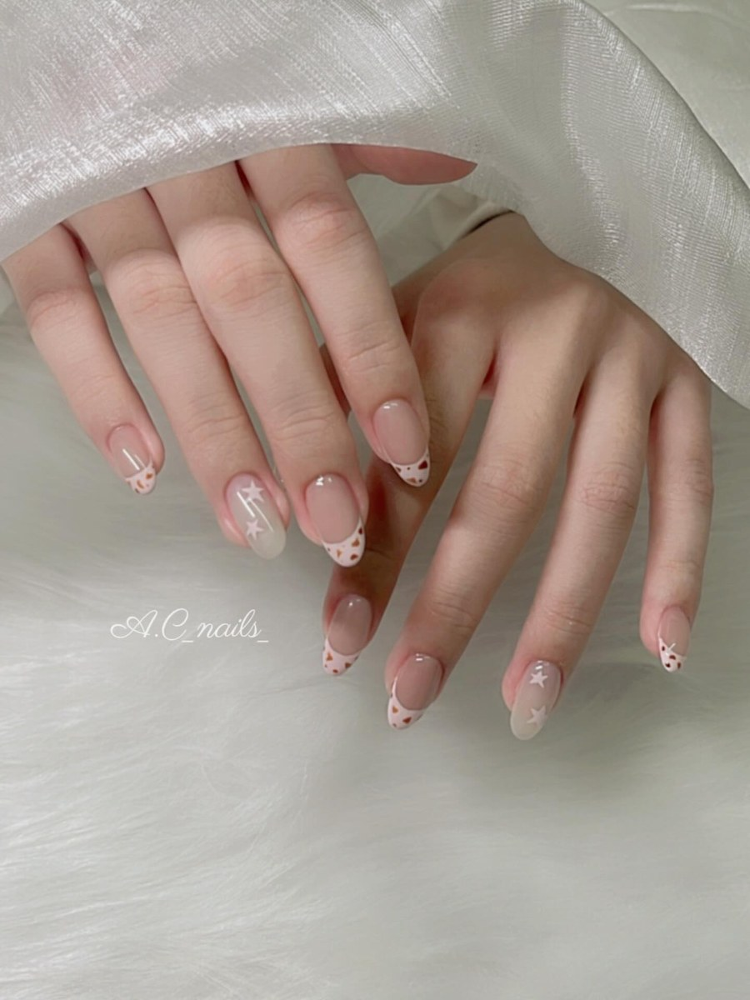

ZHUBEI · NAIL ATELIER
Soft touch,
lasting beauty.
把喜歡的樣子，
留在指尖。
手部凝膠與細緻造型，為日常留一點屬於自己的美好。竹北個人美甲工作室，全預約制。
預約你的美甲時光探索作品A.C NAILS / THE ART OF DETAILS 01 / A.C NAILS COLLECTION
01 / A.C NAILS COLLECTION
HAND GEL NAILS✧凝膠美甲 · 細緻造型✧BY APPOINTMENT
01 / SELECTED WORKS
In the details.
指尖作品選輯


02 / A MOMENT FOR YOURSELF03 / STUDIO NOTES
Before your visit.
MAKE TIME FOR YOU
Let's make something beautiful.
讓指尖成為你喜歡的樣子。
LINE 預約及詢價